library(readr)
library(tidyverse)
library(lubridate)
library(gganimate)
library(tidymodels)
library(parsnip)
library(glmnet)
library(rpart.plot)
library(baguette)
library(ranger)ST588 Homework 9
##HW 8: Basic Modeling Practice ### First order of business…load libraries that are needed for the project:
Reading Data
We’ll read in the data using readr::read_csv.
data <- read_csv("SeoulBikeData.csv")EDA
Next, we’ll do some basic EDA…
- Check for missingness by summing columns where the data
is.na.
colSums(is.na(data)) Date Rented Bike Count Hour
0 0 0
Temperature(�C) Humidity(%) Wind speed (m/s)
0 0 0
Visibility (10m) Dew point temperature(�C) Solar Radiation (MJ/m2)
0 0 0
Rainfall(mm) Snowfall (cm) Seasons
0 0 0
Holiday Functioning Day
0 0 It appears there are no missing data.
Next, we’ll check the variable (column) types and see if the data make sense (numerical values have a rational mean and other stats), and that categorical variables have unique values.
str(data)spc_tbl_ [8,760 × 14] (S3: spec_tbl_df/tbl_df/tbl/data.frame)
$ Date : chr [1:8760] "01/12/2017" "01/12/2017" "01/12/2017" "01/12/2017" ...
$ Rented Bike Count : num [1:8760] 254 204 173 107 78 100 181 460 930 490 ...
$ Hour : num [1:8760] 0 1 2 3 4 5 6 7 8 9 ...
$ Temperature(�C) : num [1:8760] -5.2 -5.5 -6 -6.2 -6 -6.4 -6.6 -7.4 -7.6 -6.5 ...
$ Humidity(%) : num [1:8760] 37 38 39 40 36 37 35 38 37 27 ...
$ Wind speed (m/s) : num [1:8760] 2.2 0.8 1 0.9 2.3 1.5 1.3 0.9 1.1 0.5 ...
$ Visibility (10m) : num [1:8760] 2000 2000 2000 2000 2000 ...
$ Dew point temperature(�C): num [1:8760] -17.6 -17.6 -17.7 -17.6 -18.6 -18.7 -19.5 -19.3 -19.8 -22.4 ...
$ Solar Radiation (MJ/m2) : num [1:8760] 0 0 0 0 0 0 0 0 0.01 0.23 ...
$ Rainfall(mm) : num [1:8760] 0 0 0 0 0 0 0 0 0 0 ...
$ Snowfall (cm) : num [1:8760] 0 0 0 0 0 0 0 0 0 0 ...
$ Seasons : chr [1:8760] "Winter" "Winter" "Winter" "Winter" ...
$ Holiday : chr [1:8760] "No Holiday" "No Holiday" "No Holiday" "No Holiday" ...
$ Functioning Day : chr [1:8760] "Yes" "Yes" "Yes" "Yes" ...
- attr(*, "spec")=
.. cols(
.. Date = col_character(),
.. `Rented Bike Count` = col_double(),
.. Hour = col_double(),
.. `Temperature(�C)` = col_double(),
.. `Humidity(%)` = col_double(),
.. `Wind speed (m/s)` = col_double(),
.. `Visibility (10m)` = col_double(),
.. `Dew point temperature(�C)` = col_double(),
.. `Solar Radiation (MJ/m2)` = col_double(),
.. `Rainfall(mm)` = col_double(),
.. `Snowfall (cm)` = col_double(),
.. Seasons = col_character(),
.. Holiday = col_character(),
.. `Functioning Day` = col_character()
.. )
- attr(*, "problems")=<externalptr> The data appears “normal”, except date is a character and hour appears like it could be a count. We can check the numeric variables by creating numeric summaries to see if they make sense. We’ll use the summary() function to get 5 number summary for numeric values:
summary(data) Date Rented Bike Count Hour Temperature(�C)
Length:8760 Min. : 0.0 Min. : 0.00 Min. :-17.80
Class :character 1st Qu.: 191.0 1st Qu.: 5.75 1st Qu.: 3.50
Mode :character Median : 504.5 Median :11.50 Median : 13.70
Mean : 704.6 Mean :11.50 Mean : 12.88
3rd Qu.:1065.2 3rd Qu.:17.25 3rd Qu.: 22.50
Max. :3556.0 Max. :23.00 Max. : 39.40
Humidity(%) Wind speed (m/s) Visibility (10m) Dew point temperature(�C)
Min. : 0.00 Min. :0.000 Min. : 27 Min. :-30.600
1st Qu.:42.00 1st Qu.:0.900 1st Qu.: 940 1st Qu.: -4.700
Median :57.00 Median :1.500 Median :1698 Median : 5.100
Mean :58.23 Mean :1.725 Mean :1437 Mean : 4.074
3rd Qu.:74.00 3rd Qu.:2.300 3rd Qu.:2000 3rd Qu.: 14.800
Max. :98.00 Max. :7.400 Max. :2000 Max. : 27.200
Solar Radiation (MJ/m2) Rainfall(mm) Snowfall (cm) Seasons
Min. :0.0000 Min. : 0.0000 Min. :0.00000 Length:8760
1st Qu.:0.0000 1st Qu.: 0.0000 1st Qu.:0.00000 Class :character
Median :0.0100 Median : 0.0000 Median :0.00000 Mode :character
Mean :0.5691 Mean : 0.1487 Mean :0.07507
3rd Qu.:0.9300 3rd Qu.: 0.0000 3rd Qu.:0.00000
Max. :3.5200 Max. :35.0000 Max. :8.80000
Holiday Functioning Day
Length:8760 Length:8760
Class :character Class :character
Mode :character Mode :character
This looks like hour is a real number and the view in the str() function output may have been coincidental, but I am still unsure what “hour” is. We can also look at the character variables to see how many unique values there may be in each category by creating frequency tables.
table(data$Seasons)
Autumn Spring Summer Winter
2184 2208 2208 2160 Seasons look reasonable, there are the four standard seasons in roughly equal proportion.
table(data$Holiday)
Holiday No Holiday
432 8328 Holiday also appears reasonable, with the only two logical possibilities, and with fewer holidays than non-holidays, which is sadly the reality.
data2 <- data |>
rename("functioningDay" = "Functioning Day")
table(data2$functioningDay)
No Yes
295 8465 This seems to make sense, there are two classes.
We’ll next conver the date from a character variable to a date using lubridate(), turn the other character variables into factors, and rename all the variables for consistent naming. We’ll use the lubridate package and the dplyr package.
names(data) [1] "Date" "Rented Bike Count"
[3] "Hour" "Temperature(�C)"
[5] "Humidity(%)" "Wind speed (m/s)"
[7] "Visibility (10m)" "Dew point temperature(�C)"
[9] "Solar Radiation (MJ/m2)" "Rainfall(mm)"
[11] "Snowfall (cm)" "Seasons"
[13] "Holiday" "Functioning Day" #rename using names()fuction to help with renaming non-standard variables
names(data) <- c("date",
"rentedBikeCount",
"hour",
"tempC",
"humidityPct",
"windM_S",
"vis",
"dewPointTempC",
"solarRadiation",
"rainfallmm",
"snowfallcm",
"seasons",
"holiday",
"functioningDay")
#coerce date from chr to date formt using lubridate::dmy
data$date <- dmy(data$date)
#create list of variables to coerce to factors
factors <- c("seasons", "holiday", "functioningDay")
#coerce to factor using list above
data3 <-data |>
mutate_at(factors, factor)
#check to see conversions were successful
head(data3)# A tibble: 6 × 14
date rentedBikeCount hour tempC humidityPct windM_S vis dewPointTempC
<date> <dbl> <dbl> <dbl> <dbl> <dbl> <dbl> <dbl>
1 2017-12-01 254 0 -5.2 37 2.2 2000 -17.6
2 2017-12-01 204 1 -5.5 38 0.8 2000 -17.6
3 2017-12-01 173 2 -6 39 1 2000 -17.7
4 2017-12-01 107 3 -6.2 40 0.9 2000 -17.6
5 2017-12-01 78 4 -6 36 2.3 2000 -18.6
6 2017-12-01 100 5 -6.4 37 1.5 2000 -18.7
# ℹ 6 more variables: solarRadiation <dbl>, rainfallmm <dbl>, snowfallcm <dbl>,
# seasons <fct>, holiday <fct>, functioningDay <fct>The variable transformations were successful. Now, we’ll move on with some more exploration of this updated data.
##Summary Statistics Across Bike Rental Count and Categorical Variables: We’ll start by grouping by rentedBikeCount:
seasonsStat <- data3 |>
group_by(seasons) |>
summarise(
count = n(),
mean = mean(rentedBikeCount),
sd = sd(rentedBikeCount),
min = min(rentedBikeCount),
max = max(rentedBikeCount)
)
seasonsStat# A tibble: 4 × 6
seasons count mean sd min max
<fct> <int> <dbl> <dbl> <dbl> <dbl>
1 Autumn 2184 820. 651. 0 3298
2 Spring 2208 730. 622. 0 3251
3 Summer 2208 1034. 690. 9 3556
4 Winter 2160 226. 150. 3 937These statistics are a little difficult to make sense of because they represent the number of bikes rented per certain hour of each date within the corresponding season, these values do not represent the average number of bikes rented per season. However, it is intuitive that more bikes are rented per certain hour on a given date during the summer vs. winter, as the weather is typically more conducive to bike riding in the summer, thereby increasing demand.
Are hours 1:24?
unique(data$hour) [1] 0 1 2 3 4 5 6 7 8 9 10 11 12 13 14 15 16 17 18 19 20 21 22 23Close…0:23. This looks like a 24 hour clock for tabulating a statndardized time window for rentals each day.
Let’s look at similar summary stats for other categorical groupings, starting with Holiday…
holidayStat <- data3 |>
group_by(holiday) |>
summarise(
count = n(),
mean = mean(rentedBikeCount),
sd = sd(rentedBikeCount),
min = min(rentedBikeCount),
max = max(rentedBikeCount)
)
holidayStat# A tibble: 2 × 6
holiday count mean sd min max
<fct> <int> <dbl> <dbl> <dbl> <dbl>
1 Holiday 432 500. 571. 0 2400
2 No Holiday 8328 715. 647. 0 3556…then Functioning Day:
funDayStat <- data3 |>
group_by(functioningDay) |>
summarise(
count = n(),
mean = mean(rentedBikeCount),
sd = sd(rentedBikeCount),
min = min(rentedBikeCount),
max = max(rentedBikeCount)
)
funDayStat# A tibble: 2 × 6
functioningDay count mean sd min max
<fct> <int> <dbl> <dbl> <dbl> <dbl>
1 No 295 0 0 0 0
2 Yes 8465 729. 642. 2 3556It looks like no bikes were rented on Non-functional days. I’m still not sure what a “Non-Functional” Day is, but we can remove the Non-Functioning Days from the dataset, since they don’t provide much useful information other than people don’t rent bikes on non-functional days.
We’ll subset the data to remove "functioningDay" == "No".
data4 <- data3 |>
filter(!functioningDay == "No")
#check to make sure the correct values were removed:
funDayStatYes <- data4 |>
group_by(functioningDay) |>
summarise(
count = n(),
mean = mean(rentedBikeCount),
sd = sd(rentedBikeCount),
min = min(rentedBikeCount),
max = max(rentedBikeCount)
)
funDayStatYes# A tibble: 1 × 6
functioningDay count mean sd min max
<fct> <int> <dbl> <dbl> <dbl> <dbl>
1 Yes 8465 729. 642. 2 3556Ok, good news. The stats for "functioningDay" remain the same after subsetting.
Next, we’ll summarize across the hours so that each day has one observation associated with it.
data5 <- data4 |>
group_by(date, seasons, holiday) |>
summarise(sumCount = sum(rentedBikeCount),
sumRain = sum(rainfallmm),
sumSnow = sum(snowfallcm),
meanTemp = mean(tempC),
meanHumidity = mean(humidityPct),
meanWind = mean(windM_S),
meanVis = mean(vis),
meanDP_C = mean(dewPointTempC),
meanSR = mean(solarRadiation))
data5# A tibble: 353 × 12
# Groups: date, seasons [353]
date seasons holiday sumCount sumRain sumSnow meanTemp meanHumidity
<date> <fct> <fct> <dbl> <dbl> <dbl> <dbl> <dbl>
1 2017-12-01 Winter No Holiday 9539 0 0 -2.45 45.9
2 2017-12-02 Winter No Holiday 8523 0 0 1.32 62.0
3 2017-12-03 Winter No Holiday 7222 4 0 4.88 81.5
4 2017-12-04 Winter No Holiday 8729 0.1 0 -0.304 52.5
5 2017-12-05 Winter No Holiday 8307 0 0 -4.46 36.4
6 2017-12-06 Winter No Holiday 6669 1.3 8.6 0.0458 70.8
7 2017-12-07 Winter No Holiday 8549 0 10.4 1.09 67.5
8 2017-12-08 Winter No Holiday 8032 0 0 -3.82 41.8
9 2017-12-09 Winter No Holiday 7233 0 0 -0.846 46
10 2017-12-10 Winter No Holiday 3453 4.1 32.5 1.19 69.7
# ℹ 343 more rows
# ℹ 4 more variables: meanWind <dbl>, meanVis <dbl>, meanDP_C <dbl>,
# meanSR <dbl>We’ll take this new summary dataset and calculate the same summary stats as before. By Season:
seasonsStat1 <- data5 |>
group_by(seasons) |>
summarise(
count = n(),
mean = mean(sumCount),
sd = sd(sumCount),
min = min(sumCount),
max = max(sumCount)
)
seasonsStat1# A tibble: 4 × 6
seasons count mean sd min max
<fct> <int> <dbl> <dbl> <dbl> <dbl>
1 Autumn 81 22099. 6711. 1721 31809
2 Spring 90 17910. 8357. 977 31681
3 Summer 92 24818. 7297. 3231 36149
4 Winter 90 5413. 1808. 2014 9539This must be a large city…36149 rentals in a single day is a lot of bikes!
By Holiday:
holidayStat1 <- data5 |>
group_by(holiday) |>
summarise(
count = n(),
mean = mean(sumCount),
sd = sd(sumCount),
min = min(sumCount),
max = max(sumCount)
)
holidayStat1# A tibble: 2 × 6
holiday count mean sd min max
<fct> <int> <dbl> <dbl> <dbl> <dbl>
1 Holiday 17 12700. 10504. 2014 30498
2 No Holiday 336 17727. 9862. 977 36149There is a large difference in sample size between Holiday and No Holiday.
EDA Graphics
Let’s create some plots to help visualize the data.
#plot snow vs. rain and color points by season.
ggplot(data5, aes(sumRain, sumSnow, size = sumCount, colour = seasons)) +
geom_point(alpha = 0.7, show.legend = TRUE) +
scale_size(range = c(2, 12)) +
facet_wrap(~holiday) +
labs(title = 'Rain and Snow Impacts on Daily Rental Volume', x = 'Sum Daily Rain', y = 'Sum Daily Snow') 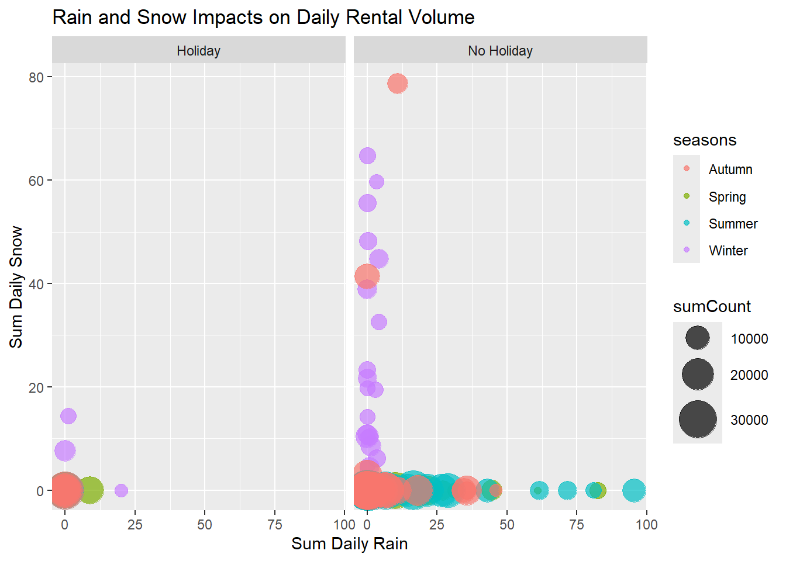
It seems that snow does not have a lot of appeal for bike riding. Rain appears to be tolerable, but the decreasing size of the rental counts relative to increasing total daily rainfall makes sense…people just don’t really want to get soaked while riding. There also are not many days where it both rains and snows. Snow seems to have the biggest impact on rental numbers in this visualization, and the trends hold between holidays and non-holidays.
Next, let’s look weather totals vs. rental volume seperately by rain or snow:
#plot snow vs. rain and color points by season.
ggplot(data5, aes(sumRain, sumCount, colour = seasons)) +
geom_point(alpha = 0.7, show.legend = TRUE) +
scale_size(range = c(2, 12)) +
labs(title = 'Rain Impacts on Daily Rental Volume', x = 'Sum Daily Rain', y = 'Daily Rental Volume') 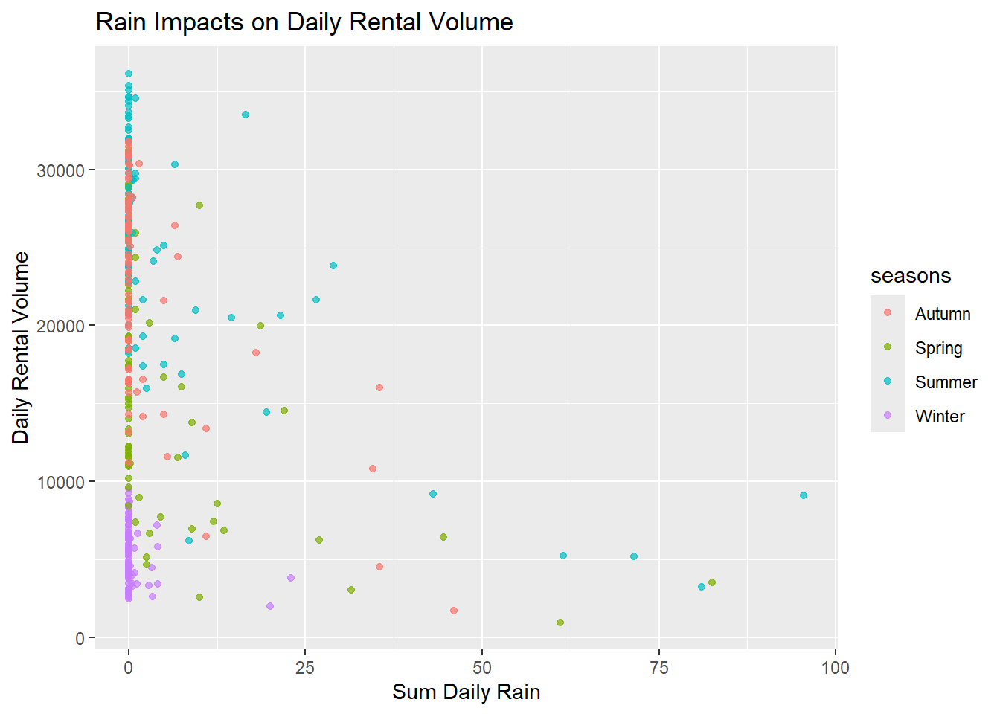
There is an apparent relationship between season and rental volume, with the warmer seasons (and dryer seasons/days) tending to exhibit the highest rental volume.
What about snow only?
ggplot(data5, aes(sumSnow, sumCount, colour = seasons)) +
geom_point(alpha = 0.7, show.legend = TRUE) +
scale_size(range = c(2, 12)) +
labs(title = 'Snow Impacts on Daily Rental Volume', x = 'Sum Daily Snow', y = 'Daily Rental Volume') 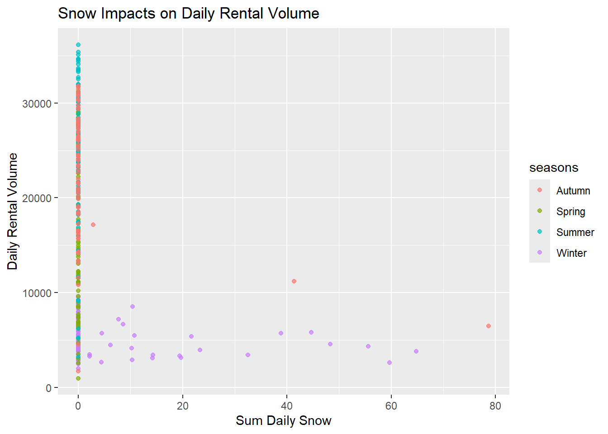
It obviously doesn’t snow much in the summer…. Appreciable snowfall depresses the rental volume quite a lot!
Split the Data
We’ll split the data into a training and test set (75/25). We’ll use the strata argument to stratify the split on the seasons variable.
First, we’ll use the initial_split(), training(), and testing() functions to create the splits:
set.seed(10)
#create split with 75% data in training set and 25% in test set, and name the sets
rental_split <- initial_split(data5, prop = 0.75, strata ="seasons")
rental_train <- training(rental_split)
rental_test <- testing(rental_split)
rental_train# A tibble: 263 × 12
# Groups: date, seasons [263]
date seasons holiday sumCount sumRain sumSnow meanTemp meanHumidity
<date> <fct> <fct> <dbl> <dbl> <dbl> <dbl> <dbl>
1 2018-09-02 Autumn No Holiday 26881 0 0 25.0 54.5
2 2018-09-03 Autumn No Holiday 10802 34.5 0 23.6 82.2
3 2018-09-04 Autumn No Holiday 29529 0 0 23.3 71.6
4 2018-09-07 Autumn No Holiday 30381 1.5 0 22.2 56.9
5 2018-09-08 Autumn No Holiday 29813 0 0 21.7 48.7
6 2018-09-09 Autumn No Holiday 28354 0 0 22.0 49.5
7 2018-09-11 Autumn No Holiday 31694 0 0 21.6 48.0
8 2018-09-13 Autumn No Holiday 30991 0 0 23.4 62.3
9 2018-09-14 Autumn No Holiday 28199 0.5 0 23.5 67.2
10 2018-09-15 Autumn No Holiday 25079 0.2 0 23.2 75.9
# ℹ 253 more rows
# ℹ 4 more variables: meanWind <dbl>, meanVis <dbl>, meanDP_C <dbl>,
# meanSR <dbl>263/353 = ~ 75%, so that looks like we successfully created the right proportions for our training/test datasets.
263 rows in the training dataset, which is not evenly divisible by 10. Each fold will have 26 observations, and one fold with have 29.
#calculate fold size by dividing by number of folds (10)
size_fold <- floor(nrow(rental_train)/10)
size_fold[1] 26Next, we’ll set a seed and randomly sample the folds into a list.
set.seed(10)
#randomly create starting indices for each fold
random_indices <- sample(1:nrow(rental_train), size = nrow(rental_train), replace=FALSE)
head(random_indices)[1] 137 72 211 143 24 13We can see above the first index of each fold.
Next, we’ll create a list in which to save our folds, then cycle through the random indices vector to place the observations from each fold in the list accordingly.
folds <- list()
for(i in 1:10){
if (i<10) {
fold_index <- seq(from = (i-1)*size_fold + 1, to = i*size_fold, by=1)
folds[[i]] <- rental_train[random_indices[fold_index], ]
} else {
fold_index <- seq(from = (i-1)*size_fold +1, to=length(random_indices), by =1)
folds[[i]] <- rental_train[random_indices[fold_index], ]
}
}
#check out the first fold:
folds[[1]]# A tibble: 26 × 12
# Groups: date, seasons [26]
date seasons holiday sumCount sumRain sumSnow meanTemp meanHumidity
<date> <fct> <fct> <dbl> <dbl> <dbl> <dbl> <dbl>
1 2018-06-14 Summer No Holiday 23818 29 0 21.7 74.4
2 2018-03-20 Spring No Holiday 11515 0 0 5.04 40.6
3 2017-12-18 Winter No Holiday 2620 3.4 59.7 -1.97 77
4 2018-06-22 Summer No Holiday 34079 0 0 24.7 47.9
5 2018-10-08 Autumn No Holiday 29362 0 0 14.7 46.5
6 2018-09-20 Autumn No Holiday 14282 5 0 19.0 80.2
7 2018-05-11 Spring No Holiday 26649 0 0 15.8 63.5
8 2018-09-11 Autumn No Holiday 31694 0 0 21.6 48.0
9 2018-01-12 Winter No Holiday 4111 0 0 -10.7 36.2
10 2018-01-13 Winter No Holiday 3503 0.4 2.2 -4.56 63.8
# ℹ 16 more rows
# ℹ 4 more variables: meanWind <dbl>, meanVis <dbl>, meanDP_C <dbl>,
# meanSR <dbl>Let’s check out the 10th fold…does it contain 29 observations?
folds[[10]]# A tibble: 29 × 12
# Groups: date, seasons [29]
date seasons holiday sumCount sumRain sumSnow meanTemp meanHumidity
<date> <fct> <fct> <dbl> <dbl> <dbl> <dbl> <dbl>
1 2018-03-25 Spring No Holiday 10963 0 0 9.62 65.8
2 2018-07-22 Summer No Holiday 18563 0 0 31.6 50.9
3 2018-04-26 Spring No Holiday 25670 0 0 15.1 50.1
4 2018-09-02 Autumn No Holiday 26881 0 0 25.0 54.5
5 2018-04-23 Spring No Holiday 977 61 0 9.43 93.8
6 2018-05-29 Spring No Holiday 24355 1 0 21.5 66.4
7 2018-03-30 Spring No Holiday 19301 0 0 14.7 55.0
8 2018-06-29 Summer No Holiday 30297 6.5 0 24.7 79.2
9 2018-05-27 Spring No Holiday 28991 0 0 20.6 42.1
10 2018-02-11 Winter No Holiday 2850 0 0 -5.99 40.5
# ℹ 19 more rows
# ℹ 4 more variables: meanWind <dbl>, meanVis <dbl>, meanDP_C <dbl>,
# meanSR <dbl>Yes! There are 29 observations in Fold #10!
Fitting MLR Models
We’ll create 3 recipes to preprocess the data…
Recipe 1
We’ll change the role of date, create a weekday/weekend factor variable from the date, standardize the numberic variables, and create dummy variables for seasons, holiday, and the new variables.
bike_rec1 <-
recipe(sumCount ~ ., data=rental_train) %>%
#change date to an ID role so that it is not included in fit, but is included in dataset
update_role(date, new_role = "ID") %>%
#change date to day of the week
step_mutate("date" = weekdays(date)) %>%
#transform day of week into week/weekend factor for inclusion in model fitting
step_mutate("date" = factor(if_else(date %in% c("Saturday", "Sunday"), "weekend", "weekday"))) %>%
#make all nominal predictors into dummy variables
step_dummy(all_nominal_predictors()) %>%
#cneter and scale numeric variables, except do not include dummy variables, dates, or outcomes
step_normalize(starts_with(c("sum", "mean")), -all_date_predictors(), -all_outcomes()) #%>%
# prep(training=rental_train) %>%
# bake(rental_train)
#bike_rec1We’ll next create the same recipe, with interaction terms between seasons and holiday, seasons and temp, and temp and rainfall.
bike_rec2 <-
recipe(sumCount ~ ., data=rental_train) %>%
update_role(date, new_role = "ID") %>%
step_mutate("date" = weekdays(date)) %>%
step_mutate("date" = factor(if_else(date %in% c("Saturday", "Sunday"), "weekend", "weekday"))) %>%
step_dummy(all_nominal_predictors()) %>%
step_normalize(starts_with(c("sum", "mean")), -all_date_predictors(), -all_outcomes()) %>%
step_interact(terms = ~ starts_with("seasons"):starts_with("holiday") + starts_with("seasons"):meanTemp + meanTemp:sumRain) #%>%
# prep(training=rental_train) %>%
# bake(rental_train)
#bike_rec2On to recipe three that includes quadratic terms:
bike_rec3 <-
recipe(sumCount ~ ., data=rental_train) %>%
update_role(date, new_role = "ID") %>%
step_mutate("date" = weekdays(date)) %>%
step_mutate("date" = factor(if_else(date %in% c("Saturday", "Sunday"), "weekend", "weekday"))) %>%
step_dummy(all_nominal_predictors()) %>%
step_normalize(starts_with(c("sum", "mean")), -all_date_predictors(), -all_outcomes()) %>%
step_poly(all_numeric_predictors(), -starts_with(c("seasons", "holiday")), degree = 2) #%>%
#prep(training=rental_train) %>%
#bake(rental_train)
#bike_rec3Next, we’ll create our model using the lm engine:
rentalMod <- linear_reg() %>%
#use "lm", or linear model engine for model fitting
set_engine("lm")Next, we’ll create flow to fit the model and out put tidy estimates of the parameters:
#create workflow for recipe 1 that starts with the recipe and fits the preprocessed data through the model engine specified in "rentalMod" object.
rental_wfl_1 <- workflow() %>%
add_recipe(bike_rec1) %>%
add_model(rentalMod)
#rental_wfl_1Next well just fit Recipe 1 to test out our system:
#this code initiates the fitting of the preprocessed data through the model on the training dataset
rental_fit1 <- rental_wfl_1 %>%
fit(rental_train)
rental_fit1 %>%
tidy()# A tibble: 13 × 5
term estimate std.error statistic p.value
<chr> <dbl> <dbl> <dbl> <dbl>
1 (Intercept) 19423. 1265. 15.3 6.56e-38
2 sumRain -1597. 353. -4.53 9.24e- 6
3 sumSnow -368. 294. -1.25 2.12e- 1
4 meanTemp -4793. 4803. -0.998 3.19e- 1
5 meanHumidity -2939. 1799. -1.63 1.04e- 1
6 meanWind -626. 315. -1.99 4.78e- 2
7 meanVis -142. 395. -0.361 7.19e- 1
8 meanDP_C 9880. 5608. 1.76 7.93e- 2
9 meanSR 3999. 509. 7.85 1.19e-13
10 seasons_Spring -4650. 885. -5.25 3.18e- 7
11 seasons_Summer -3466. 1096. -3.16 1.75e- 3
12 seasons_Winter -8191. 1196. -6.85 5.85e-11
13 holiday_No.Holiday 2706. 1196. 2.26 2.45e- 2We’ll do 10 fold CV on the training data:
#split the training dataset into 10 folds
rental_10_fold <- vfold_cv(rental_train, 10)
#resample each of the 10 folds and put the specified workflow
rental_CV_fits_1 <- rental_wfl_1 %>%
fit_resamples(rental_10_fold)
rental_CV_fits_1# Resampling results
# 10-fold cross-validation
# A tibble: 10 × 4
splits id .metrics .notes
<list> <chr> <list> <list>
1 <split [236/27]> Fold01 <tibble [2 × 4]> <tibble [0 × 3]>
2 <split [236/27]> Fold02 <tibble [2 × 4]> <tibble [0 × 3]>
3 <split [236/27]> Fold03 <tibble [2 × 4]> <tibble [0 × 3]>
4 <split [237/26]> Fold04 <tibble [2 × 4]> <tibble [0 × 3]>
5 <split [237/26]> Fold05 <tibble [2 × 4]> <tibble [0 × 3]>
6 <split [237/26]> Fold06 <tibble [2 × 4]> <tibble [0 × 3]>
7 <split [237/26]> Fold07 <tibble [2 × 4]> <tibble [0 × 3]>
8 <split [237/26]> Fold08 <tibble [2 × 4]> <tibble [0 × 3]>
9 <split [237/26]> Fold09 <tibble [2 × 4]> <tibble [0 × 3]>
10 <split [237/26]> Fold10 <tibble [2 × 4]> <tibble [0 × 3]>Next we’ll get the metrics:
rental_CV_fits_1 %>%
collect_metrics()# A tibble: 2 × 6
.metric .estimator mean n std_err .config
<chr> <chr> <dbl> <int> <dbl> <chr>
1 rmse standard 4424. 10 200. Preprocessor1_Model1
2 rsq standard 0.790 10 0.0203 Preprocessor1_Model1Now, we’ll repeat starting from the workflow step for each recipe. First, workflow for recipe 2, fit model, then do 10-fold CV on test dataset, then get metrics for each model:
#create workflow for recipe 2
rental_wfl_2 <- workflow() %>%
add_recipe(bike_rec2) %>%
add_model(rentalMod)
rental_wfl_2══ Workflow ════════════════════════════════════════════════════════════════════
Preprocessor: Recipe
Model: linear_reg()
── Preprocessor ────────────────────────────────────────────────────────────────
5 Recipe Steps
• step_mutate()
• step_mutate()
• step_dummy()
• step_normalize()
• step_interact()
── Model ───────────────────────────────────────────────────────────────────────
Linear Regression Model Specification (regression)
Computational engine: lm #create workflow for recipe 3
rental_wfl_3 <- workflow() %>%
add_recipe(bike_rec3) %>%
add_model(rentalMod)
rental_wfl_3══ Workflow ════════════════════════════════════════════════════════════════════
Preprocessor: Recipe
Model: linear_reg()
── Preprocessor ────────────────────────────────────────────────────────────────
5 Recipe Steps
• step_mutate()
• step_mutate()
• step_dummy()
• step_normalize()
• step_poly()
── Model ───────────────────────────────────────────────────────────────────────
Linear Regression Model Specification (regression)
Computational engine: lm #fit model 2
rental_fit2 <- rental_wfl_2 %>%
fit(rental_train)
rental_fit2 %>%
tidy()# A tibble: 20 × 5
term estimate std.error statistic p.value
<chr> <dbl> <dbl> <dbl> <dbl>
1 (Intercept) 17269. 1591. 10.9 1.20e-22
2 sumRain -1794. 346. -5.18 4.66e- 7
3 sumSnow -309. 211. -1.47 1.44e- 1
4 meanTemp -4462. 3716. -1.20 2.31e- 1
5 meanHumidity -3621. 1364. -2.65 8.46e- 3
6 meanWind -436. 225. -1.94 5.41e- 2
7 meanVis 417. 306. 1.36 1.74e- 1
8 meanDP_C 11065. 4241. 2.61 9.65e- 3
9 meanSR 2842. 373. 7.62 5.78e-13
10 seasons_Spring -3049. 2837. -1.07 2.84e- 1
11 seasons_Summer 20176. 3153. 6.40 8.03e-10
12 seasons_Winter -5806. 2424. -2.40 1.74e- 2
13 holiday_No.Holiday 4772. 1633. 2.92 3.81e- 3
14 seasons_Spring_x_holiday_No.Holiday -1112. 2900. -0.383 7.02e- 1
15 seasons_Summer_x_holiday_No.Holiday -1514. 2747. -0.551 5.82e- 1
16 seasons_Winter_x_holiday_No.Holiday -2271. 2061. -1.10 2.72e- 1
17 seasons_Spring_x_meanTemp 5997. 1146. 5.23 3.57e- 7
18 seasons_Summer_x_meanTemp -19270. 1520. -12.7 1.29e-28
19 seasons_Winter_x_meanTemp -584. 1458. -0.401 6.89e- 1
20 meanTemp_x_sumRain -1317. 425. -3.10 2.18e- 3#fit model 3
rental_fit3 <- rental_wfl_3 %>%
fit(rental_train)
rental_fit3 %>%
tidy()# A tibble: 21 × 5
term estimate std.error statistic p.value
<chr> <dbl> <dbl> <dbl> <dbl>
1 (Intercept) 16531. 1269. 13.0 9.46e-30
2 seasons_Spring -4578. 865. -5.29 2.71e- 7
3 seasons_Summer -160. 1167. -0.137 8.91e- 1
4 seasons_Winter -4079. 1312. -3.11 2.10e- 3
5 holiday_No.Holiday 3723. 1124. 3.31 1.07e- 3
6 sumRain_poly_1 -30478. 6320. -4.82 2.50e- 6
7 sumRain_poly_2 3347. 4445. 0.753 4.52e- 1
8 sumSnow_poly_1 -136. 4647. -0.0293 9.77e- 1
9 sumSnow_poly_2 -4268. 4375. -0.976 3.30e- 1
10 meanTemp_poly_1 -229695. 89008. -2.58 1.05e- 2
# ℹ 11 more rows#10-fold CV recipe 2
#rental_10_fold_2 <- vfold_cv(rental_train, 10)
rental_CV_fits_2 <- rental_wfl_2 %>%
fit_resamples(rental_10_fold)
rental_CV_fits_2# Resampling results
# 10-fold cross-validation
# A tibble: 10 × 4
splits id .metrics .notes
<list> <chr> <list> <list>
1 <split [236/27]> Fold01 <tibble [2 × 4]> <tibble [0 × 3]>
2 <split [236/27]> Fold02 <tibble [2 × 4]> <tibble [0 × 3]>
3 <split [236/27]> Fold03 <tibble [2 × 4]> <tibble [0 × 3]>
4 <split [237/26]> Fold04 <tibble [2 × 4]> <tibble [0 × 3]>
5 <split [237/26]> Fold05 <tibble [2 × 4]> <tibble [0 × 3]>
6 <split [237/26]> Fold06 <tibble [2 × 4]> <tibble [0 × 3]>
7 <split [237/26]> Fold07 <tibble [2 × 4]> <tibble [0 × 3]>
8 <split [237/26]> Fold08 <tibble [2 × 4]> <tibble [0 × 3]>
9 <split [237/26]> Fold09 <tibble [2 × 4]> <tibble [0 × 3]>
10 <split [237/26]> Fold10 <tibble [2 × 4]> <tibble [0 × 3]>#10-fold CV recipe 3
#rental_10_fold_3 <- vfold_cv(rental_train, 10)
rental_CV_fits_3 <- rental_wfl_3 %>%
fit_resamples(rental_10_fold)
rental_CV_fits_3# Resampling results
# 10-fold cross-validation
# A tibble: 10 × 4
splits id .metrics .notes
<list> <chr> <list> <list>
1 <split [236/27]> Fold01 <tibble [2 × 4]> <tibble [0 × 3]>
2 <split [236/27]> Fold02 <tibble [2 × 4]> <tibble [0 × 3]>
3 <split [236/27]> Fold03 <tibble [2 × 4]> <tibble [0 × 3]>
4 <split [237/26]> Fold04 <tibble [2 × 4]> <tibble [0 × 3]>
5 <split [237/26]> Fold05 <tibble [2 × 4]> <tibble [0 × 3]>
6 <split [237/26]> Fold06 <tibble [2 × 4]> <tibble [0 × 3]>
7 <split [237/26]> Fold07 <tibble [2 × 4]> <tibble [0 × 3]>
8 <split [237/26]> Fold08 <tibble [2 × 4]> <tibble [0 × 3]>
9 <split [237/26]> Fold09 <tibble [2 × 4]> <tibble [0 × 3]>
10 <split [237/26]> Fold10 <tibble [2 × 4]> <tibble [0 × 3]>Here, we’ll display the metrics for recipe 2:
rental_CV_fits_2 %>%
collect_metrics()# A tibble: 2 × 6
.metric .estimator mean n std_err .config
<chr> <chr> <dbl> <int> <dbl> <chr>
1 rmse standard 3366. 10 224. Preprocessor1_Model1
2 rsq standard 0.878 10 0.0176 Preprocessor1_Model1…And for recipe 3:
rental_CV_fits_3 %>%
collect_metrics()# A tibble: 2 × 6
.metric .estimator mean n std_err .config
<chr> <chr> <dbl> <int> <dbl> <chr>
1 rmse standard 4351. 10 156. Preprocessor1_Model1
2 rsq standard 0.804 10 0.0194 Preprocessor1_Model1Recipe 2 has the lowest RMSE and highest R-squared.
We need to create a metric set using yardstick::metric_set() in order to specify the mae metrics to be output in all the models.
final_metrics <- metric_set(rmse, mae)We’ll use the “best” model on the test dataset and see how it fares:
#use last_fit() function to collect metrics from recipe/model 2 and display
testResults <- last_fit(rental_wfl_2, split = rental_split, metrics = final_metrics)
mle_metrics <- collect_metrics(testResults)
mle_metrics# A tibble: 2 × 4
.metric .estimator .estimate .config
<chr> <chr> <dbl> <chr>
1 rmse standard 3340. Preprocessor1_Model1
2 mae standard 2525. Preprocessor1_Model1RMSE for test dataset is 3339.891 with r-squared of 0.8928. These values seem to match closely to the estimates from the training dataset using recipe 2.
LASSO, Regression Tree, Bagged Tree, and Random Forest models:
We’ll start with the first model for Homework 9, the LASSO model.
We need to start with the recipe. Since it is best to standardize the predictors for LASSO models, we’ll create a similar recipe as for the previous LM recipes from homework 8 in which the numerical predictors were normlized. We’ll create the same three recipes to test the LASSO model family:
#create the LASSO model specification using the glmnet engine
LASSO_mod <- linear_reg(penalty = tune(), mixture = 1) %>%
set_engine("glmnet")Next, we’ll create the LASSO model workflows:
LASSO_wfl_1 <- workflow() %>%
add_recipe(bike_rec1) %>%
add_model(LASSO_mod)
LASSO_wfl_1══ Workflow ════════════════════════════════════════════════════════════════════
Preprocessor: Recipe
Model: linear_reg()
── Preprocessor ────────────────────────────────────────────────────────────────
4 Recipe Steps
• step_mutate()
• step_mutate()
• step_dummy()
• step_normalize()
── Model ───────────────────────────────────────────────────────────────────────
Linear Regression Model Specification (regression)
Main Arguments:
penalty = tune()
mixture = 1
Computational engine: glmnet LASSO_wfl_2 <- workflow() %>%
add_recipe(bike_rec2) %>%
add_model(LASSO_mod)
LASSO_wfl_2══ Workflow ════════════════════════════════════════════════════════════════════
Preprocessor: Recipe
Model: linear_reg()
── Preprocessor ────────────────────────────────────────────────────────────────
5 Recipe Steps
• step_mutate()
• step_mutate()
• step_dummy()
• step_normalize()
• step_interact()
── Model ───────────────────────────────────────────────────────────────────────
Linear Regression Model Specification (regression)
Main Arguments:
penalty = tune()
mixture = 1
Computational engine: glmnet LASSO_wfl_3 <- workflow() %>%
add_recipe(bike_rec3) %>%
add_model(LASSO_mod)
LASSO_wfl_3══ Workflow ════════════════════════════════════════════════════════════════════
Preprocessor: Recipe
Model: linear_reg()
── Preprocessor ────────────────────────────────────────────────────────────────
5 Recipe Steps
• step_mutate()
• step_mutate()
• step_dummy()
• step_normalize()
• step_poly()
── Model ───────────────────────────────────────────────────────────────────────
Linear Regression Model Specification (regression)
Main Arguments:
penalty = tune()
mixture = 1
Computational engine: glmnet For the LASSO family, next, we’ll fit the model using the tune_grid function:
LASSO_grid_1 <- LASSO_wfl_1 %>%
tune_grid(resamples = rental_10_fold,
grid = grid_regular(penalty(), levels = 200))
LASSO_grid_1# Tuning results
# 10-fold cross-validation
# A tibble: 10 × 4
splits id .metrics .notes
<list> <chr> <list> <list>
1 <split [236/27]> Fold01 <tibble [400 × 5]> <tibble [0 × 3]>
2 <split [236/27]> Fold02 <tibble [400 × 5]> <tibble [0 × 3]>
3 <split [236/27]> Fold03 <tibble [400 × 5]> <tibble [0 × 3]>
4 <split [237/26]> Fold04 <tibble [400 × 5]> <tibble [0 × 3]>
5 <split [237/26]> Fold05 <tibble [400 × 5]> <tibble [0 × 3]>
6 <split [237/26]> Fold06 <tibble [400 × 5]> <tibble [0 × 3]>
7 <split [237/26]> Fold07 <tibble [400 × 5]> <tibble [0 × 3]>
8 <split [237/26]> Fold08 <tibble [400 × 5]> <tibble [0 × 3]>
9 <split [237/26]> Fold09 <tibble [400 × 5]> <tibble [0 × 3]>
10 <split [237/26]> Fold10 <tibble [400 × 5]> <tibble [0 × 3]>Let’s show the LASSO penalty metrics:
LASSO_grid_1[1, ".metrics"][[1]][[1]]
# A tibble: 400 × 5
penalty .metric .estimator .estimate .config
<dbl> <chr> <chr> <dbl> <chr>
1 1 e-10 rmse standard 5172. Preprocessor1_Model001
2 1.12e-10 rmse standard 5172. Preprocessor1_Model002
3 1.26e-10 rmse standard 5172. Preprocessor1_Model003
4 1.41e-10 rmse standard 5172. Preprocessor1_Model004
5 1.59e-10 rmse standard 5172. Preprocessor1_Model005
6 1.78e-10 rmse standard 5172. Preprocessor1_Model006
7 2.00e-10 rmse standard 5172. Preprocessor1_Model007
8 2.25e-10 rmse standard 5172. Preprocessor1_Model008
9 2.52e-10 rmse standard 5172. Preprocessor1_Model009
10 2.83e-10 rmse standard 5172. Preprocessor1_Model010
# ℹ 390 more rowsThen, we’ll collect those metrics that include RMSE:
LASSO_grid_1 %>%
collect_metrics() %>%
filter(.metric == "rmse")# A tibble: 200 × 7
penalty .metric .estimator mean n std_err .config
<dbl> <chr> <chr> <dbl> <int> <dbl> <chr>
1 1 e-10 rmse standard 4413. 10 191. Preprocessor1_Model001
2 1.12e-10 rmse standard 4413. 10 191. Preprocessor1_Model002
3 1.26e-10 rmse standard 4413. 10 191. Preprocessor1_Model003
4 1.41e-10 rmse standard 4413. 10 191. Preprocessor1_Model004
5 1.59e-10 rmse standard 4413. 10 191. Preprocessor1_Model005
6 1.78e-10 rmse standard 4413. 10 191. Preprocessor1_Model006
7 2.00e-10 rmse standard 4413. 10 191. Preprocessor1_Model007
8 2.25e-10 rmse standard 4413. 10 191. Preprocessor1_Model008
9 2.52e-10 rmse standard 4413. 10 191. Preprocessor1_Model009
10 2.83e-10 rmse standard 4413. 10 191. Preprocessor1_Model010
# ℹ 190 more rowsNow we’ll plot these metrics:
LASSO_grid_1 %>%
collect_metrics() %>%
filter(.metric == "rmse") %>%
ggplot(aes(penalty, mean, color = .metric)) +
geom_line() +
labs(title = "LASSO Model 1")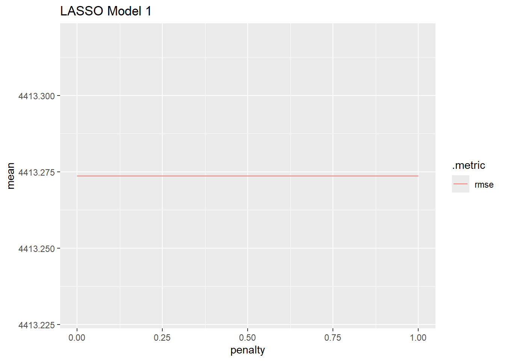
Let’s repeat the LASSO steps for the models 2 and 3 (adding interaction and quadratic terms, respectively)
LASSO_grid_2 <- LASSO_wfl_2 %>%
tune_grid(resamples = rental_10_fold,
grid = grid_regular(penalty(), levels = 200))
LASSO_grid_2# Tuning results
# 10-fold cross-validation
# A tibble: 10 × 4
splits id .metrics .notes
<list> <chr> <list> <list>
1 <split [236/27]> Fold01 <tibble [400 × 5]> <tibble [0 × 3]>
2 <split [236/27]> Fold02 <tibble [400 × 5]> <tibble [0 × 3]>
3 <split [236/27]> Fold03 <tibble [400 × 5]> <tibble [0 × 3]>
4 <split [237/26]> Fold04 <tibble [400 × 5]> <tibble [0 × 3]>
5 <split [237/26]> Fold05 <tibble [400 × 5]> <tibble [0 × 3]>
6 <split [237/26]> Fold06 <tibble [400 × 5]> <tibble [0 × 3]>
7 <split [237/26]> Fold07 <tibble [400 × 5]> <tibble [0 × 3]>
8 <split [237/26]> Fold08 <tibble [400 × 5]> <tibble [0 × 3]>
9 <split [237/26]> Fold09 <tibble [400 × 5]> <tibble [0 × 3]>
10 <split [237/26]> Fold10 <tibble [400 × 5]> <tibble [0 × 3]>LASSO_grid_3 <- LASSO_wfl_3 %>%
tune_grid(resamples = rental_10_fold,
grid = grid_regular(penalty(), levels = 200))
LASSO_grid_3# Tuning results
# 10-fold cross-validation
# A tibble: 10 × 4
splits id .metrics .notes
<list> <chr> <list> <list>
1 <split [236/27]> Fold01 <tibble [400 × 5]> <tibble [0 × 3]>
2 <split [236/27]> Fold02 <tibble [400 × 5]> <tibble [0 × 3]>
3 <split [236/27]> Fold03 <tibble [400 × 5]> <tibble [0 × 3]>
4 <split [237/26]> Fold04 <tibble [400 × 5]> <tibble [0 × 3]>
5 <split [237/26]> Fold05 <tibble [400 × 5]> <tibble [0 × 3]>
6 <split [237/26]> Fold06 <tibble [400 × 5]> <tibble [0 × 3]>
7 <split [237/26]> Fold07 <tibble [400 × 5]> <tibble [0 × 3]>
8 <split [237/26]> Fold08 <tibble [400 × 5]> <tibble [0 × 3]>
9 <split [237/26]> Fold09 <tibble [400 × 5]> <tibble [0 × 3]>
10 <split [237/26]> Fold10 <tibble [400 × 5]> <tibble [0 × 3]>Let’s show the LASSO penalty metrics for models 2…:
LASSO_grid_2[1, ".metrics"][[1]][[1]]
# A tibble: 400 × 5
penalty .metric .estimator .estimate .config
<dbl> <chr> <chr> <dbl> <chr>
1 1 e-10 rmse standard 3196. Preprocessor1_Model001
2 1.12e-10 rmse standard 3196. Preprocessor1_Model002
3 1.26e-10 rmse standard 3196. Preprocessor1_Model003
4 1.41e-10 rmse standard 3196. Preprocessor1_Model004
5 1.59e-10 rmse standard 3196. Preprocessor1_Model005
6 1.78e-10 rmse standard 3196. Preprocessor1_Model006
7 2.00e-10 rmse standard 3196. Preprocessor1_Model007
8 2.25e-10 rmse standard 3196. Preprocessor1_Model008
9 2.52e-10 rmse standard 3196. Preprocessor1_Model009
10 2.83e-10 rmse standard 3196. Preprocessor1_Model010
# ℹ 390 more rows…And let’s show the LASSO penalty metrics for model 3:
LASSO_grid_3[1, ".metrics"][[1]][[1]]
# A tibble: 400 × 5
penalty .metric .estimator .estimate .config
<dbl> <chr> <chr> <dbl> <chr>
1 1 e-10 rmse standard 4489. Preprocessor1_Model001
2 1.12e-10 rmse standard 4489. Preprocessor1_Model002
3 1.26e-10 rmse standard 4489. Preprocessor1_Model003
4 1.41e-10 rmse standard 4489. Preprocessor1_Model004
5 1.59e-10 rmse standard 4489. Preprocessor1_Model005
6 1.78e-10 rmse standard 4489. Preprocessor1_Model006
7 2.00e-10 rmse standard 4489. Preprocessor1_Model007
8 2.25e-10 rmse standard 4489. Preprocessor1_Model008
9 2.52e-10 rmse standard 4489. Preprocessor1_Model009
10 2.83e-10 rmse standard 4489. Preprocessor1_Model010
# ℹ 390 more rowsNext, we’ll plot the penalties and RMSE values for LASSO Models 2 and 3:
LASSO_grid_2 %>%
collect_metrics() %>%
filter(.metric == "rmse") %>%
ggplot(aes(penalty, mean, color = .metric)) +
geom_line() +
labs(title = "LASSO Model 2")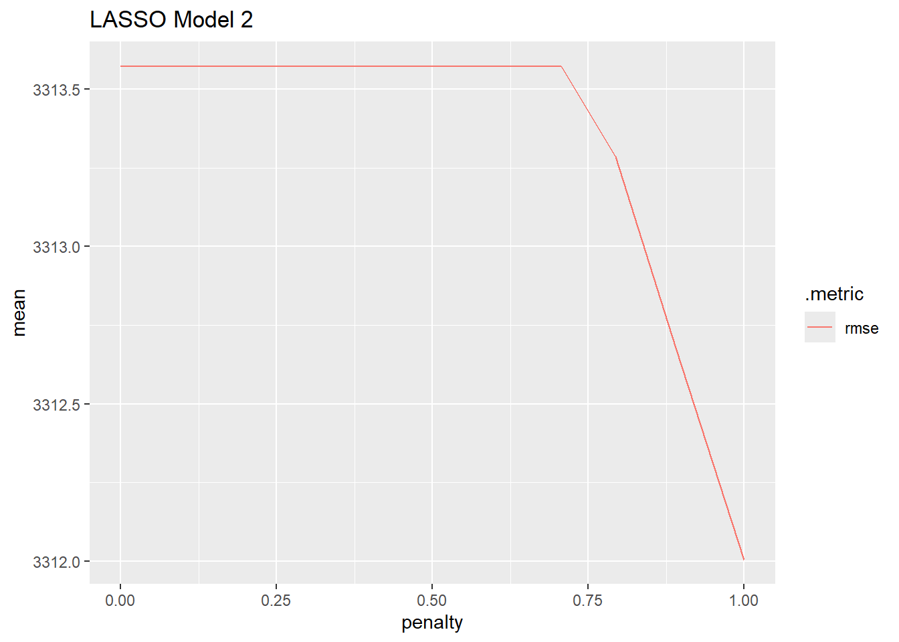
LASSO_grid_3 %>%
collect_metrics() %>%
filter(.metric == "rmse") %>%
ggplot(aes(penalty, mean, color = .metric)) +
geom_line() +
labs(title = "LASSO Model 3")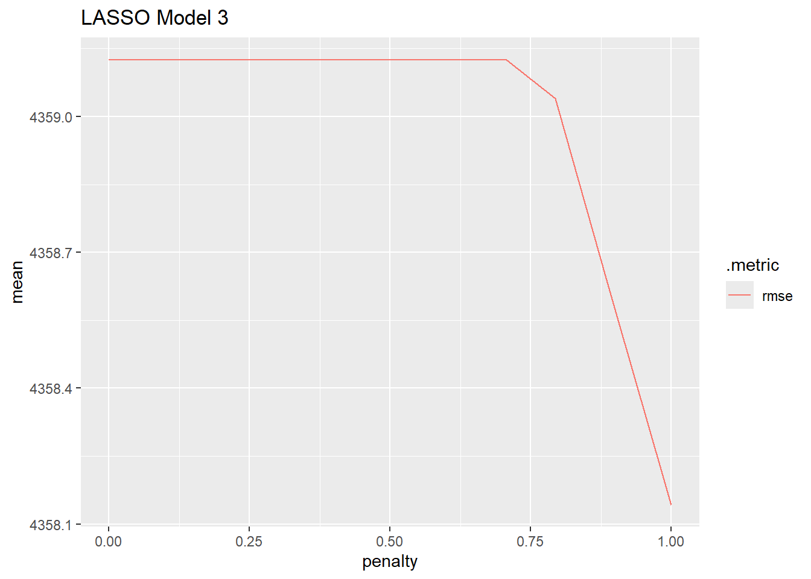
Next, we’ll determine the tuning parameter that is associated with the best RMSE value and determine that model’s coefficients using select_best() and finalize_workflow for each LASSO model.
lowest_rmse_LASSO_1 <- LASSO_grid_1 %>%
select_best(metric = "rmse")
lowest_rmse_LASSO_2 <- LASSO_grid_2 %>%
select_best(metric = "rmse")
lowest_rmse_LASSO_3 <- LASSO_grid_3 %>%
select_best(metric = "rmse")
rbind(lowest_rmse_LASSO_1, lowest_rmse_LASSO_2, lowest_rmse_LASSO_3)# A tibble: 3 × 2
penalty .config
<dbl> <chr>
1 0.0000000001 Preprocessor1_Model001
2 1 Preprocessor1_Model200
3 1 Preprocessor1_Model200Model 2 has the lowest RMSE, and the best LASSO model for model 2 aligns with the penalty of 1.
Let’s fit model 2 on our training set.
LASSO_final <- LASSO_wfl_2 %>%
finalize_workflow(lowest_rmse_LASSO_2) %>%
fit(rental_train)
tidy(LASSO_final)# A tibble: 20 × 3
term estimate penalty
<chr> <dbl> <dbl>
1 (Intercept) 17541. 1
2 sumRain -1913. 1
3 sumSnow -344. 1
4 meanTemp -176. 1
5 meanHumidity -2067. 1
6 meanWind -425. 1
7 meanVis 456. 1
8 meanDP_C 6013. 1
9 meanSR 2821. 1
10 seasons_Spring -2656. 1
11 seasons_Summer 19203. 1
12 seasons_Winter -6296. 1
13 holiday_No.Holiday 4447. 1
14 seasons_Spring_x_holiday_No.Holiday -1558. 1
15 seasons_Summer_x_holiday_No.Holiday -799. 1
16 seasons_Winter_x_holiday_No.Holiday -1739. 1
17 seasons_Spring_x_meanTemp 6013. 1
18 seasons_Summer_x_meanTemp -18975. 1
19 seasons_Winter_x_meanTemp -642. 1
20 meanTemp_x_sumRain -1238. 1Now, let’s fit the LASSO model 2 on the test set:
LASSO_test <- LASSO_wfl_2 %>%
finalize_workflow(lowest_rmse_LASSO_2) %>%
last_fit(rental_split, metrics = final_metrics) %>%
collect_metrics()Regression Tree Model
First, we’ll do similar steps as for above models…we’ll define the model engine and create a workflow for the Regression Tree model. We will fit on recipes 1 and 3, as Regression Tree models already take interactions into account.
#define model engine.
tree_mod <- decision_tree(tree_depth = tune(),
min_n = 20,
cost_complexity = tune()) %>%
set_engine("rpart") %>%
set_mode("regression")
#create workflow for each regression tree model:
tree_wfl_1 <- workflow() %>%
add_recipe(bike_rec1) %>%
add_model(tree_mod)
tree_wfl_2 <- workflow() %>%
add_recipe(bike_rec3) %>%
add_model(tree_mod)Next, we’ll create the tuning grid and specify number of each of tree_depth and cost_complexity values to tune to.
tree_grid <- grid_regular(cost_complexity(),
tree_depth(),
levels = c(10,5))Then, we’ll use tune_grid() with the tree_grid object from above.
tree_fits_1 <- tree_wfl_1 %>%
tune_grid(resamples = rental_10_fold,
grid = tree_grid)
tree_fits_2 <- tree_wfl_2 %>%
tune_grid(resamples = rental_10_fold,
grid = tree_grid)Then, we’ll plot the tree_fits_1 and…
tree_fits_1 %>%
collect_metrics() %>%
mutate(tree_depth = factor(tree_depth)) %>%
ggplot(aes(cost_complexity, mean, color = tree_depth)) +
geom_line(size = 1.0, alpha = 0.5) +
geom_point(size = 2) +
facet_wrap(~ .metric, scales = "free", nrow=2) +
scale_x_log10(labels = scales::label_number()) +
scale_color_viridis_d(option = "mako", begin = .9, end= 0)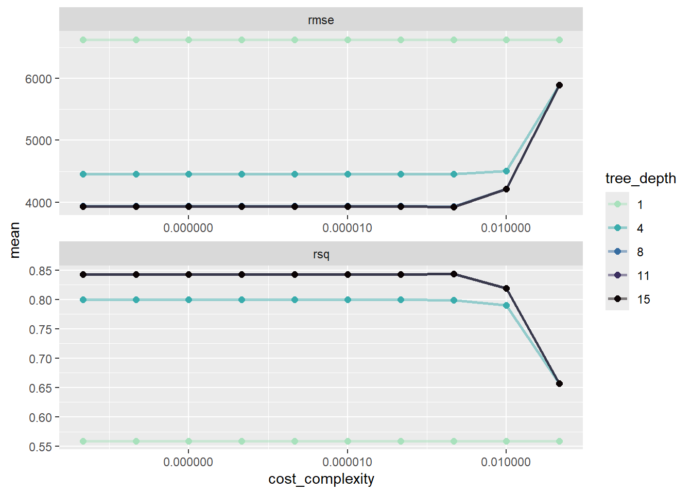
…tree_fits_2 metrics:
tree_fits_2 %>%
collect_metrics() %>%
mutate(tree_depth = factor(tree_depth)) %>%
ggplot(aes(cost_complexity, mean, color = tree_depth)) +
geom_line(size = 1.0, alpha = 0.5) +
geom_point(size = 2) +
facet_wrap(~ .metric, scales = "free", nrow=2) +
scale_x_log10(labels = scales::label_number()) +
scale_color_viridis_d(option = "mako", begin = .9, end= 0)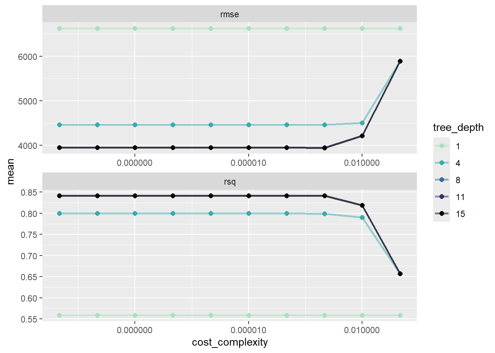
It looks like the regression tree already accounts for the higher order variables, since both plots appear very similar. This matches with what I’ve read in various descriptions of the technique.
Now, we will select_best to get the best model’s tuning parameters, then finalize the model and create a workflow that contains the best model with the lowest cost_complexity using finalize_workflow.
tree_best_params <- select_best(tree_fits_1, metric = "rmse")
tree_final_wfl <- tree_wfl_1 %>%
finalize_workflow(tree_best_params)Now, we’ll fit the best regression tree model on the test dataset:
#use last_fit()on rental_split
tree_final_fit <- tree_final_wfl %>%
last_fit(rental_split, metrics = final_metrics)
#collect metrics on the final_fit on the test dataset:
tree_final_metrics <- tree_final_fit %>%
collect_metrics()
tree_final_metrics# A tibble: 2 × 4
.metric .estimator .estimate .config
<chr> <chr> <dbl> <chr>
1 rmse standard 3211. Preprocessor1_Model1
2 mae standard 2542. Preprocessor1_Model1Lastly, we’ll plot the regression tree:
tree_final_model <- extract_workflow(tree_final_fit)
tree_final_model %>%
extract_fit_engine() %>%
rpart.plot::rpart.plot(roundint = FALSE)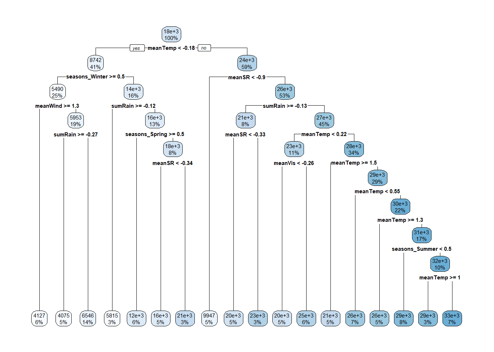
Bagged Tree Model
Here we’ll use specify a model engine, create a workflow, fit CV folds, check log_loss function, get best tuning parameter and refit on test dataset.
First, specify model engine:
bag_mod <- bag_tree(tree_depth = 5, min_n = 10, cost_complexity = tune()) %>%
set_engine("rpart") %>%
set_mode("regression")Next, we’ll creat the workflow for the Bagged Tree model:
bag_wfl <- workflow() %>%
add_recipe(bike_rec1) %>%
add_model(bag_mod)Next, fit the CV folds:
bag_fit <- bag_wfl %>%
tune_grid(resamples = rental_10_fold,
grid=grid_regular(cost_complexity(),
levels = 15)
)Next, we’ll select the best bagged tree model by using select_best:
bag_best_params <- select_best(bag_fit, metric = "rmse")
bag_best_params# A tibble: 1 × 2
cost_complexity .config
<dbl> <chr>
1 0.0000139 Preprocessor1_Model09Now, we’ll fit on test dataset using the tuning parameter from above:
bag_final_wfl <- bag_wfl %>%
finalize_workflow(bag_best_params)
bag_final_fit <- bag_final_wfl %>%
last_fit(rental_split, metrics = final_metrics)
bag_final_metrics <- bag_final_fit %>% collect_metrics()
bag_final_metrics# A tibble: 2 × 4
.metric .estimator .estimate .config
<chr> <chr> <dbl> <chr>
1 rmse standard 2774. Preprocessor1_Model1
2 mae standard 2160. Preprocessor1_Model1Now, we’ll plot variable importance:
bag_final_model <- extract_fit_engine(bag_final_fit)
bag_final_model$imp %>%
mutate(term = factor(term, levels = term)) %>%
ggplot(aes(x=term, y=value, levels = term)) +
geom_bar(stat = "identity") +
coord_flip()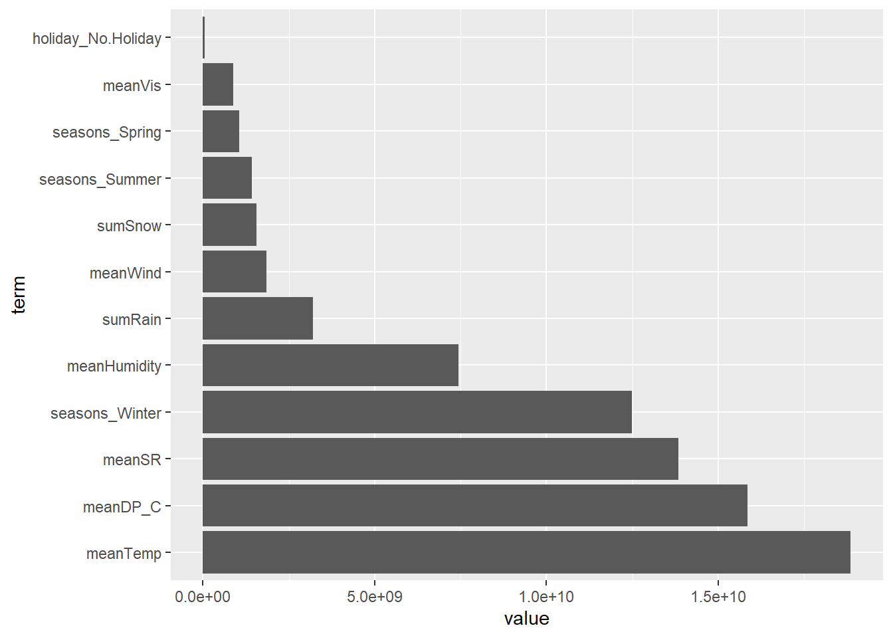
It Appears as if meanTemp is the most important predictor according to the Bagged Tree model.
On to Random Forest!
Now we’ll repeat the same steps as above to demonstrate the random forest model using the Tidymodels package.
First, we’ll specify the model engine.
rf_mod <- rand_forest(mtry = tune()) %>%
set_engine("ranger", importance = "impurity") %>%
set_mode("regression")Then, we’ll create the Random Forest workflow:
rf_wfl <- workflow() %>%
add_recipe(bike_rec1) %>%
add_model(rf_mod)Now, fit the CV folds:
rf_fit <- rf_wfl %>%
tune_grid(resamples = rental_10_fold,
grid = 7)We’ll select the best tuning parameter:
rf_best_params <- select_best(rf_fit, metric="rmse")
rf_best_params# A tibble: 1 × 2
mtry .config
<int> <chr>
1 11 Preprocessor1_Model3Now…refit the test set with the best tuning parameter:
rf_final_wfl <- rf_wfl %>%
finalize_workflow(rf_best_params)
rf_final_fit <- rf_final_wfl %>%
last_fit(rental_split, metrics = final_metrics)
rf_final_metrics <- rf_final_fit %>%
collect_metrics()
rf_final_metrics# A tibble: 2 × 4
.metric .estimator .estimate .config
<chr> <chr> <dbl> <chr>
1 rmse standard 2919. Preprocessor1_Model1
2 mae standard 2234. Preprocessor1_Model1Now, we’ll extract the fit engine and plot importance:
rf_final_model <- extract_fit_engine(rf_final_fit)
rf_importance <- as_tibble(stack(rf_final_model$variable.importance))
names(rf_importance) <- c("value", "term")
rf_importance <-arrange(rf_importance, ("value"))
rf_importance %>%
mutate(term = fct_reorder(term, desc(value))) %>%
ggplot(aes(x=term, y=value, levels = term)) +
geom_bar(stat = "identity") +
coord_flip()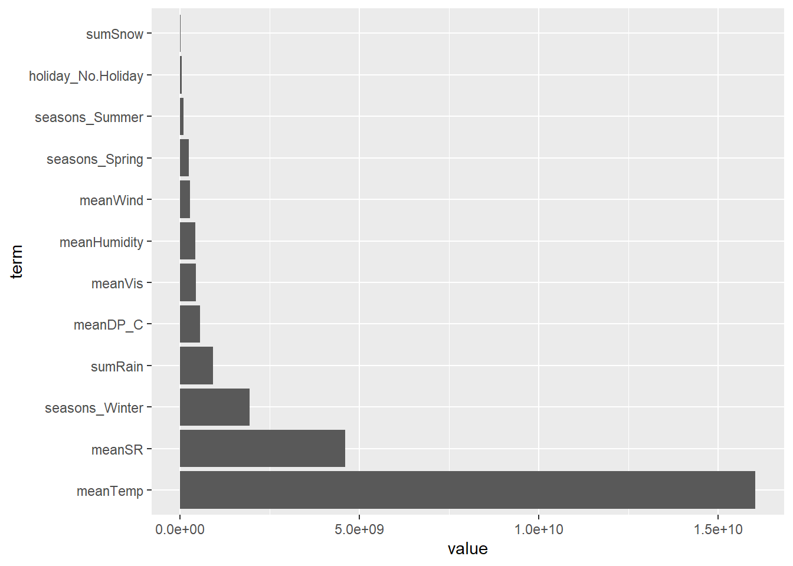
Now, let’s compare all of the models and determine which is best using rmse and mae:
#I somehow got "mlr" specified as "mle" throughout. Correcting here in comparison table:
mle_metrics$source <- "mlr"
LASSO_test$source <- "LASSO"
tree_final_metrics$source <- "regression_tree"
bag_final_metrics$source <- "bagged_tree"
rf_final_metrics$source <- "random_forest"
comparison <- as_tibble(rbind(mle_metrics,
LASSO_test,
tree_final_metrics,
bag_final_metrics,
rf_final_metrics))
comparison# A tibble: 10 × 5
.metric .estimator .estimate .config source
<chr> <chr> <dbl> <chr> <chr>
1 rmse standard 3340. Preprocessor1_Model1 mlr
2 mae standard 2525. Preprocessor1_Model1 mlr
3 rmse standard 3335. Preprocessor1_Model1 LASSO
4 mae standard 2520. Preprocessor1_Model1 LASSO
5 rmse standard 3211. Preprocessor1_Model1 regression_tree
6 mae standard 2542. Preprocessor1_Model1 regression_tree
7 rmse standard 2774. Preprocessor1_Model1 bagged_tree
8 mae standard 2160. Preprocessor1_Model1 bagged_tree
9 rmse standard 2919. Preprocessor1_Model1 random_forest
10 mae standard 2234. Preprocessor1_Model1 random_forest It looks like the Bagged Tree is the best model on the test dataset. The Bagged Tree model has the lowest rmse, and the second lowest MAE.
Use fit() to fit best (Bagged Tree) to full dataset.
Lastly, we’ll fit the best model, the Bagged Tree model, on the entire Dataset!
final_model <- bag_final_wfl %>%
fit(data5)
final_model<- extract_fit_engine(final_model)
final_model$imp %>%
mutate(term = factor(term, levels = term)) %>%
ggplot(aes(x=term, y=value, levels = term)) +
geom_bar(stat = "identity") +
coord_flip()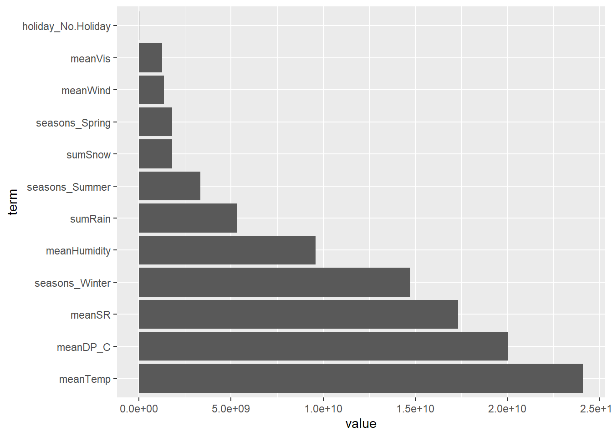